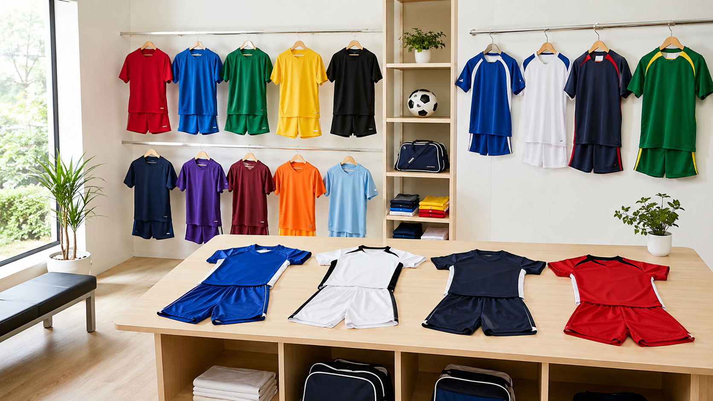

PR ｜ サンプル記事
デザインボックス
ユニフォーム制作
オンラインショップ（全国対応）
「チームの想いを、一着に。」
少年団・チーム専門のユニフォーム制作。
おそろいのユニフォームは、チームの一体感を生む大切なもの。オンラインで全国に対応する「デザインボックス」は、少年団やクラブのオリジナルユニフォーム・Tシャツを手がける制作のプロ。今回はその仕事ぶりを取材しました。
サッカー、野球、バスケ、ミニバス——競技を問わず、チームのオリジナルユニフォームやTシャツを制作。名入れ・番号・チームロゴまで、思いどおりの一着に仕上げてくれます。「市販品では物足りない」「チームらしさを出したい」という声に応えてきた、地域のものづくり屋さんです。
「デザインのイメージがまとまっていなくても大丈夫」。ラフな要望からでも、プロが形にしてくれるのがデザインボックスの強み。色や書体、配置のバランスまで一緒に決めながら、納得の一着に。納期やサイズ展開の相談にもていねいに対応してくれます。
Q. 制作で大事にしていることは？
チームの「らしさ」を引き出すこと。同じデザインはひとつもありません。お子さんが袖を通したときに笑顔になる一着を目指しています。
Q. はじめての方へ。
枚数が少なくても、デザインが決まっていなくても歓迎です。まずは気軽にご相談ください。
少年団やクラブからの依頼を数多く手がけてきた実績があり、小ロットの注文にも対応。「人数が少ないから」とあきらめる必要はありません。卒団記念のグッズや、保護者会のおそろいTシャツなど、思い出づくりのお手伝いもしてくれます。

「卒団記念のユニフォームをお願いしました。デザインから相談に乗ってもらえて、子どもたちも大喜び。一生の思い出になりました。」